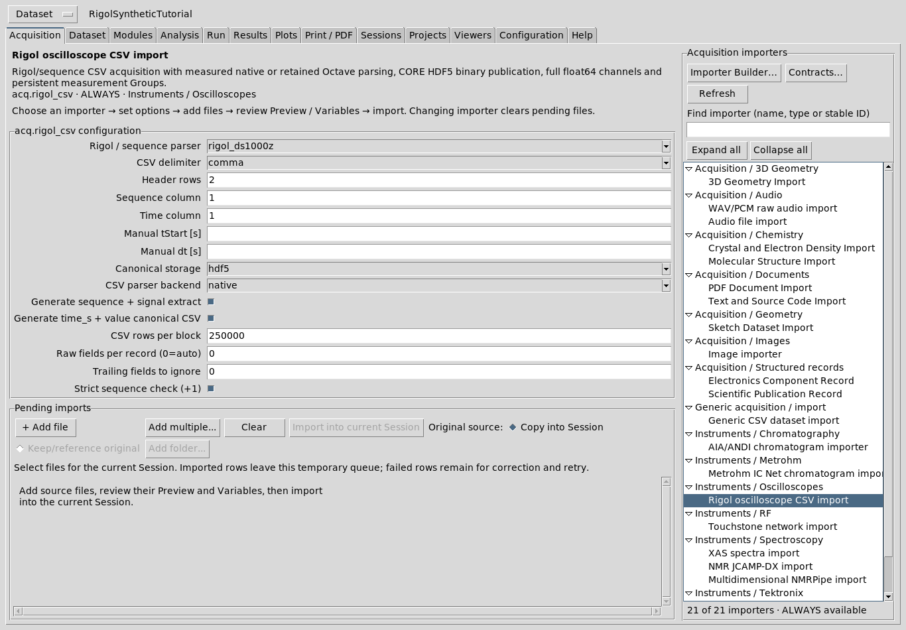
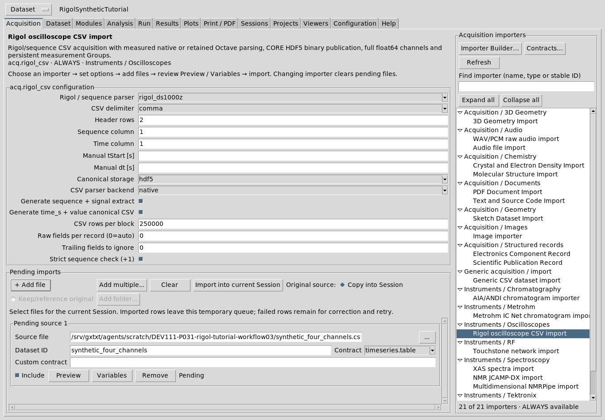
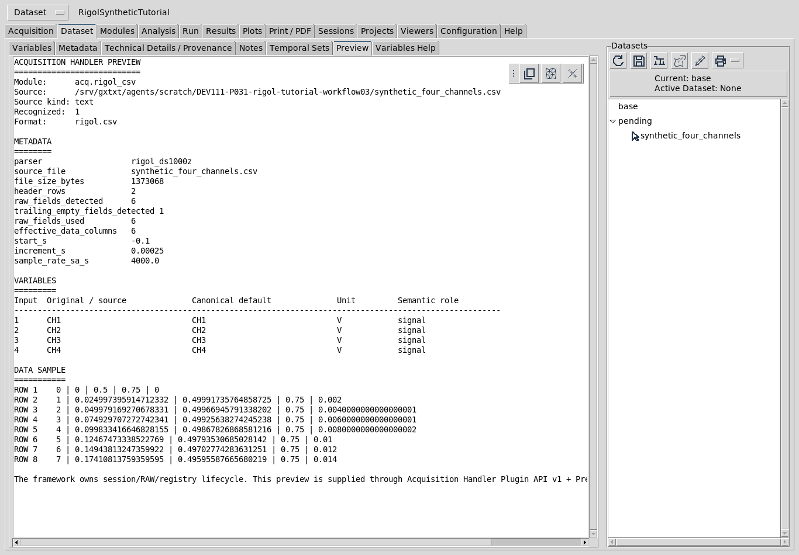
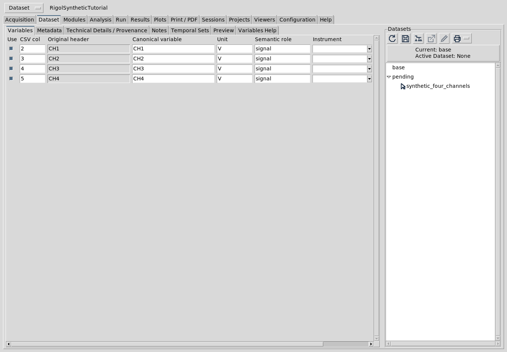
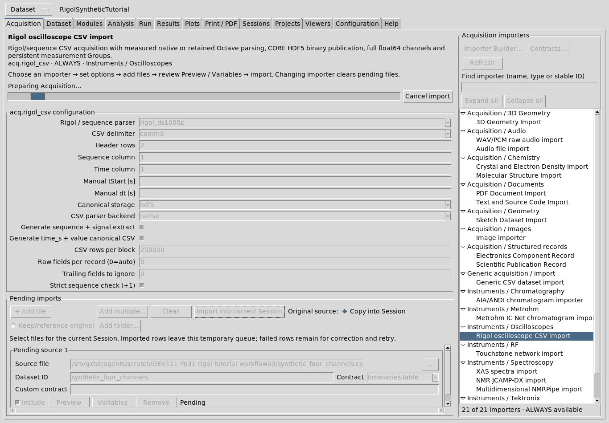
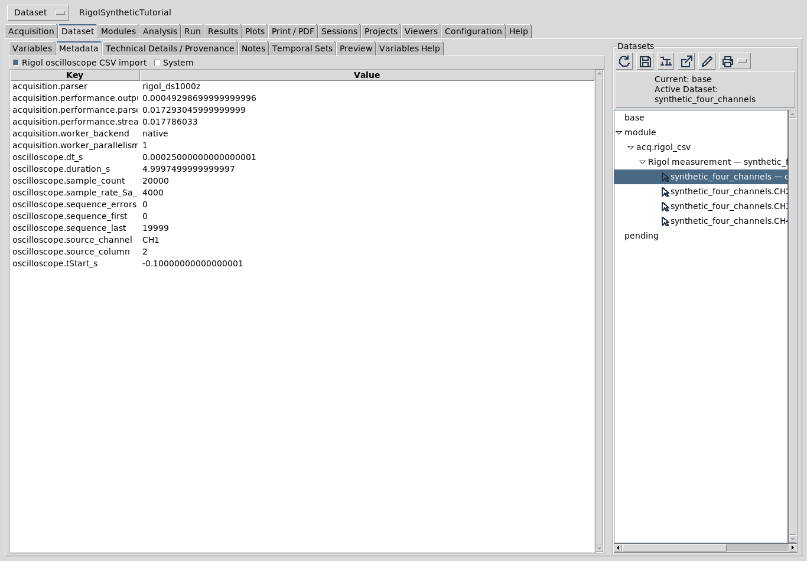
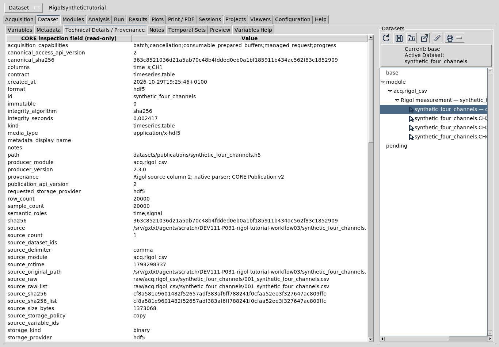
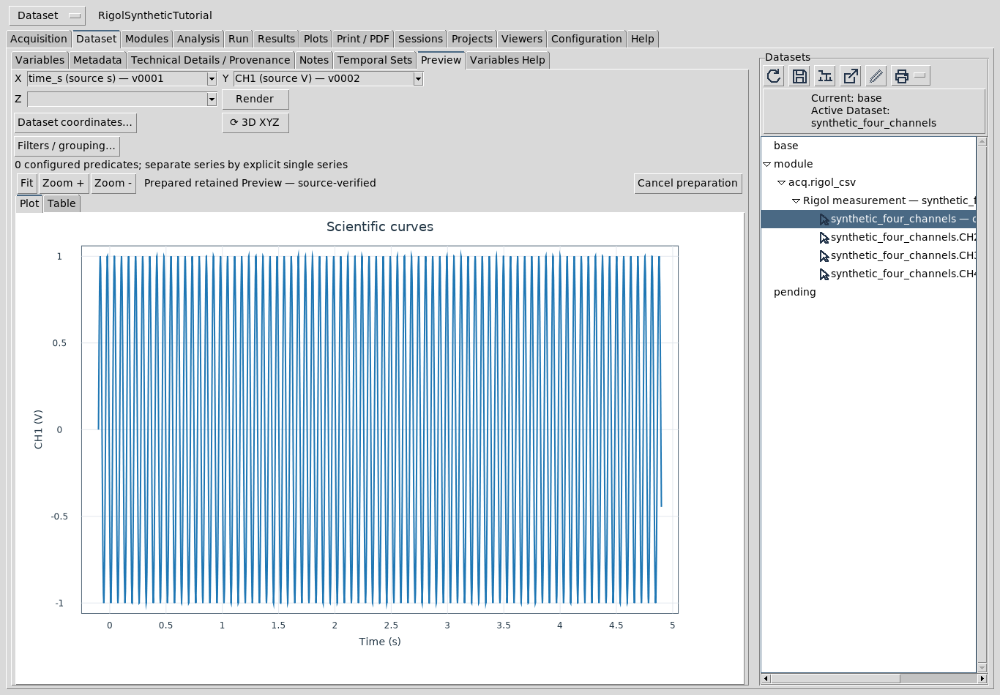

Rigol oscilloscope CSV import · acq.rigol_csv · module 2.3.1
This guide follows the normal GX-TXT Acquisition page. All importers are always available. Selecting an importer sets the current acquisition route; it does not start an import.
acq.rigol_csv.A group heading or empty area does not stand for an importer. Changing importer clears pending files: finish or deliberately clear the current queue before changing routes.

Use an exported oscilloscope CSV containing numeric sequence/time and channel samples. The default rigol_ds1000z parser expects two header rows, comma delimiters and sequence column 1. The first header identifies channels; the second supplies channel units and the values corresponding to Start and Increment. These timing values are metadata, not extra signal channels.
X,CH1,CH2,CH3,CH4,Start,Increment, Sequence,Volt,Volt,Volt,Volt,-0.1,0.00025, 0,0,0.5,0.75,0, 1,0.024997395914712332,0.49991735764858725,0.75,0.002, …
This teaching example reconstructs time_s = Start + sequence × Increment. A 0.00025 s increment corresponds to 4,000 samples/s. Confirm your own source values in Preview. Missing timing, channel or instrument information is not invented. For other supported layouts, select generic_sequence or generic_time and review the relevant column/timing settings.
Choose + Add file and select the supported CSV in the normal file chooser. Add multiple… queues several files. Set a unique Dataset ID, review the contract, and keep Include checked for intended rows. Rigol uses Copy into Session for the original source.

Settings apply to inspection and import. Change them to match the actual file, then review Preview again.
| Actual field | Meaning and choice |
|---|---|
| Rigol / sequence parser | rigol_ds1000z, generic_sequence or generic_time. Choose the source layout, not an inferred instrument model. |
| CSV delimiter; Header rows | Comma, semicolon or tab; number of header rows to skip. Defaults are comma and 2. |
| Sequence column; Time column | One-based source columns. Sequence mode reconstructs time; generic time uses the declared time column. Do not treat a signal as time. |
| Manual tStart [s]; Manual dt [s] | Explicit timing values when appropriate for the layout. Confirm their effect in Preview and keep the actual source provenance. |
| Canonical storage | auto chooses CORE HDF5 for source files at least 8 MiB and CSV below that threshold. hdf5 requests the actual CORE binary writer; csv retains the round-trip-precision CSV path. Neither option decimates scientific samples. |
| CSV parser backend | auto uses the available native worker for HDF5, otherwise retained Octave. native requires its real binary and HDF5; octave explicitly uses the retained worker. CSV storage uses Octave. An unavailable explicit backend refuses rather than disguising a fallback. |
| Generate sequence + signal extract; Generate time_s + value canonical CSV | Optional text outputs from the accepted import path. They do not replace canonical channel identities, and their cost may matter for large files. |
| CSV rows per block | Bounded streaming block size; default 250,000. This is not a scientific reduction factor. |
| Raw fields per record (0=auto); Trailing fields to ignore | Describe the actual record structure. Inspect detected raw/trailing fields before overriding them; do not discard real channels to hide a mismatch. |
| Strict sequence check (+1) | Checks expected sequence progression. A sequence diagnostic is a reason to review the file/settings, not silently relabel or resample it. |
The shown run deliberately selects hdf5 and native for the small synthetic CSV so that their real workflow is visible. This is not a claim that auto would choose HDF5 for this file, nor a promise of parallel CSV parsing from the global worker count.


Choose Import into current Session. The current Session identity is pinned for the managed request. The heading reports the current phase, parser work and per-channel publication/finalization; phase percentages are not a whole-job duration guarantee. The interface remains responsive.

Cancel import requests cancellation and waits for the owned worker to drain before recovery. Before the Group transaction commits, incomplete new channels and copied RAW roll back together; existing Session Datasets remain. If the whole Group already committed, that committed receipt wins a late cancellation. Changing Session cancels the original request and never redirects its results into the new Session. Allow recovery to finish; a recovery failure remains an explicit diagnostic for review.
Successful rows leave the temporary pending queue. Failed rows remain for correction and retry; open their Failed: details… action and read the diagnostic/log. Do not interpret an empty queue alone as proof of success: inspect the canonical results.
Open Dataset and expand module → acq.rigol_csv in the existing Dataset Browser. The measurement Group contains one independent timeseries.table Dataset per selected channel. For this example there are four members, each with all 20,000 source rows. A sampled drawing is a presentation; canonical storage retains full float64 samples.
Each channel has stable variables v0001 (time_s, seconds) and v0002 (the signal in its source-declared unit). The base Dataset ID identifies the first channel; other channels receive distinct IDs. Their Group records actual membership, role, canonical/source identity and namespace. Expand/collapse to inspect members. Whole-Group move/portable export preserves their association; detach a member explicitly before moving it independently. A Group is an association of canonical Datasets, not a combined replacement array.
Use the activation glyph beside a channel to make it active; ordinary row highlighting browses without silently switching the active Dataset. Open Metadata and Technical Details / Provenance. Check actual source channel/column, row count, storage, Start/Increment/sample rate and RAW/canonical identities. Verify RAW source… verifies the preserved source through the existing owner.


Activate the desired channel with its glyph, then choose Preview. Wait for preparation to complete. Select the stable X time_s and Y signal variables, use Render, Fit and zoom as needed. The native Plot/Table views consult the canonical Dataset; source units and identities remain in CORE. Filters/grouping, coordinate choices and a display reduction affect the presentation, not the full-resolution import.

Preview availability is controlled through the existing framework Configuration, separately from importer selection. A missing compatible Preview gives a diagnostic; it does not make the already published Dataset invalid. Use Table and source metadata to inspect the exact canonical record.
Open the rendered technical MANUAL.md reference. The original Markdown remains packaged and can be opened through the manual host References → Technical manual (Markdown). Both use the existing Documentation Browser; no external browser or copied scientific data are required.
The same References primary menu opens the module's actual declared API documentation. Useful entries are ACQUISITION_HANDLER_PLUGIN_API_v1 (inspect/import callbacks), ACQUISITION_PUBLICATION_API_v1 (transaction/publication), DATASET_PUBLICATION_API_v2 (typed numeric channels), DATASET_GROUP_API_v1 (persistent association), DATASET_API_v1, CONFIGURATION_API_v1 and INSTRUMENT_MODULE_API_v1. Select the exact entry; the host opens the installed reference through its declared index and containment rules.
Return to the first step. The guide and illustrations are part of module 2.3.1. This documentation update does not change the accepted parser source/binary or scientific storage format.